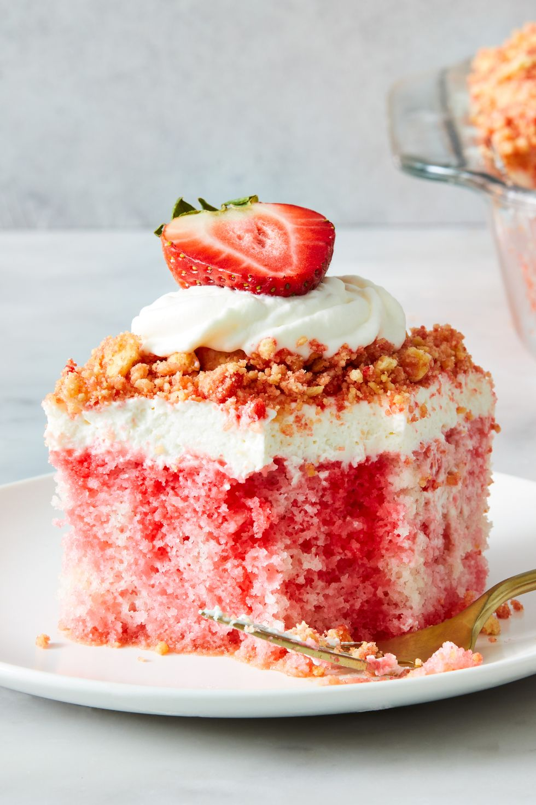

Strawberry Crunch Poke Cake

What are we cooking today?
This delicious strawberry crunch poke cake will have your taste buds tingling with anticipation. Featuring fluffy cake infused with strawberry cream and topped with a creamy whipped cream topping with added cookie crunch, each bite is packed with flavor.
Ingridients & Equipment
Cake
- Nonstick cooking spray
- 1 (15.25-oz.) box white cake mix, plus ingredients called for on box
- 1 (3-oz.) box strawberry Jell-O
Frosting
- 1 1/2 c. heavy cream
- 1 (8-oz.) block cream cheese, room temperature
- 2/3 c. (75 g.) confectioners' sugar
- 1 tsp. pure vanilla extract
- 1/8 tsp. kosher salt
Toping
- 24 vanilla sandwich cookies, such as Golden Oreos
- 4 tbsp. (1/2 stick) unsalted butter, melted
- 1 (3-oz.) box strawberry Jell-O
- Fresh strawberries, halved lengthwise, for serving
Cooking Time!
Cake
- Preheat oven to 350°. Grease a 13"-x-9" baking pan with cooking spray. Prepare cake according to package directions.
- Pour batter into prepared pan. Bake cake until a tester inserted into the center comes out clean, 20 to 25 minutes. Let cool.
- Using a bamboo skewer or chopstick, poke holes all over cake, making sure not to go through to the bottom and spacing 1/2" to 1" apart.
- In a small saucepan, bring 1/2 cup water to a boil. Add Jell-O powder; whisk until dissolved. Remove from heat and whisk in 1/2 cup cold water.
- Pour gelatin mixture evenly over holes on cake. Cover and refrigerate at least 2 hours or up to overnight.
Frosting
- In a large bowl, using a handheld mixer, beat cream on medium-high speed until stiff peaks form.
- In another large bowl, using handheld mixer, beat cream cheese on medium-high speed until smooth and fluffy. Add confectioners' sugar and beat until smooth, then add in vanilla and salt. Fold in whipped cream until just combined.
- Spread frosting over top of cake; reserve remaining frosting for topping (optional).
Toping
- In a food processor, pulse cookies to pea-sized crumbs. Transfer to a medium bowl. Pour butter over crumbs, sprinkle with Jell-O powder, and stir to combine.
- Sprinkle crumb mixture over frosting, then lightly press down on crumbs to adhere.
- Dollop or pipe reserved frosting over crumbs (if using). Top dollops with strawberries.